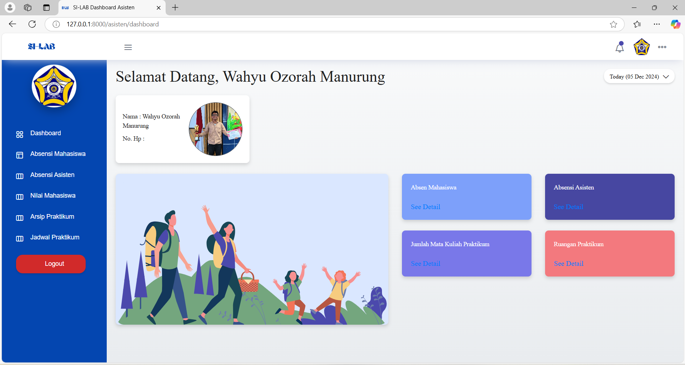
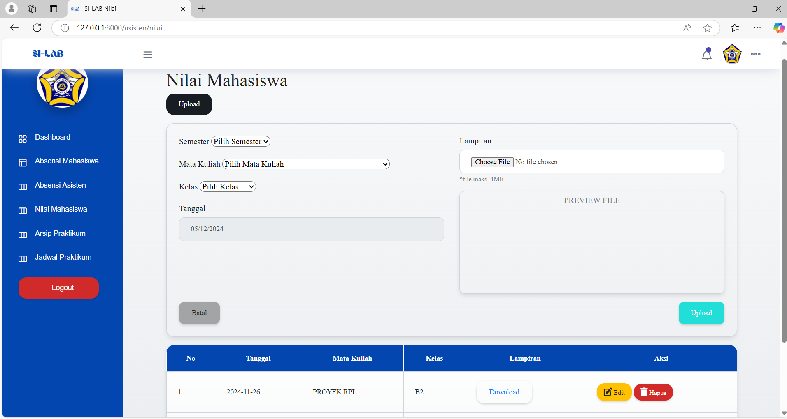

Informatics Laboratory Information System

3
User Roles
6+
Core Modules
CRUD
Data Management
Web
Information System
Situation (Background)
Administrative management within the Informatics Laboratory often faces efficiency constraints due to fragmented or manual operational record-keeping. Crucial processes such as practicum scheduling, student data management, lab assistant attendance recapitulation, and final project document archiving require a significant amount of time and are prone to data duplication or loss. Addressing these issues, the Informatics Laboratory Information System project was developed as a centralized digital platform solution to automate and integrate the entire laboratory governance.

Task (Challenges & Requirements Analysis)
My main task in this project was to build an Enterprise-Ready web-based application with a secure architecture and optimal performance. The greatest technical challenge lay in designing strict multi-user access controls (Multi-User Access) and complex database modeling. The system was required to isolate features and precisely differentiate control rights based on 3 main entities (Administrator, Teaching Assistant, and Student) to ensure the integrity of laboratory data remains secure.
Action (Methodology & Development Process)
This project was completed using a structured Full-Stack Development approach with the waterfall methodology, spanning from system requirements engineering to code implementation:
1. System Analysis and Design (UML Modeling)
Before entering the coding phase, I modeled the system using Astah UML software to lock down the business logic and application data architecture through several diagrams:
- Entity Relationship Diagram (ERD): Designing a normalized relational database schema for efficient laboratory data storage.
- Use Case & Activity Diagram: Mapping the functional requirements and business process flows for each user category.
- Class & Sequence Diagram: Modeling the class structure, object relationships, and the dynamic interaction flow between users and the system backend.
2. System Implementation (Full-Stack Coding)
This application was built using the Laravel ecosystem, focusing programming efforts on the MVC (Model-View-Controller) architecture:
- Centralized Data Management (CRUD Modules): Developing secure data manipulation systems (Create, Read, Update, Delete) for student data modules, lab assistant data modules, and practicum schedule management.
- Multi-Role Authorization System: Implementing authentication and authorization mechanisms based on Laravel middleware to strictly separate page access rights among Admin, Assistants, and Students.
- Operational Module & Digital Archive: Building a structured digital practicum attendance system, automated schedule management modules, and a file storage repository to digitally archive students' report documents and major final projects.
- Responsive User Interface: Designing the visual interface using Bootstrap and JavaScript components to produce an informative, interactive, and responsive Monitoring Dashboard page accessible across various devices.

Result (Final Outcome & Impact)
Through the application of a disciplined development methodology, this project successfully delivered a robust and production-ready Informatics Laboratory Information System platform. Operational data automation through this system has proven to significantly cut down laboratory administrative bureaucracy, eliminate human error in attendance recap management, and make it easier for teaching assistants to monitor practicum activities in real-time. The mature UML diagram design at the beginning also ensured that the source code structure remains clean, modular, and easy to scale up in the future.